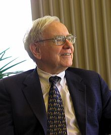

Buffett was born in 1930 in Omaha, Nebraska. He was the second of three
children and the only son of Leila (née Stahl) and Congressman Howard Buffett,
Buffett began his education at Rose Hill Elementary School. In 1942, his father
was elected to the first of four terms in the United States Congress, and after
moving with his family to Washington, D.C., Warren finished elementary school,
attended Alice Deal Junior High School and graduated from Woodrow Wilson High
School in 1947, where his senior yearbook picture reads: "likes math; a future
stockbroker." After finishing high school and finding success with his side
entrepreneurial and investment ventures, Buffett wanted to skip college to go
directly into business but was overruled by his father.
Buffett displayed an interest in business and investing at a young age. Much of
Buffett's early childhood years were enlivened with entrepreneurial ventures.
One of his first business ventures, Buffett sold chewing gum, Coca-Cola bottles,
or weekly magazines door to door. He worked in his grandfather's grocery store.
While still in high school, he made money delivering newspapers, selling golf
balls and stamps, and detailing cars, among other means. On his first income tax
return in 1944, Buffett took a $35 deduction for the use of his bicycle and
watch on his paper route.
In 1945, as a high school sophomore, Buffett and a
friend spent $25 to purchase a used pinball machine, which they placed in the
local barber shop. Within months, they owned several machines in three different
barber shops across Omaha. The business was sold later in the year for $1,200 to
a war veteran.
Buffett's interest in the stock market and investing dated to schoolboy days he
spent in the customers' lounge of a regional stock brokerage near his father's
own brokerage office. On a trip to New York City at age ten, he made a point to
visit the New York Stock Exchange.
At 11, he bought three shares of Cities
Service Preferred for himself, and three for his sister Doris Buffett (founder
of The Sunshine Lady Foundation). At the age of 15, Warren made more than $175
monthly delivering Washington Post newspapers. In high school, he invested in a
business owned by his father and bought a 40-acre farm worked by a tenant
farmer. He bought the land when he was 14 years old with $1,200 of his savings.
By the time he finished college, Buffett had accumulated more than $90,000 in
savings measured in 2009 dollars
In 1947, Buffett entered the Wharton School of the University of Pennsylvania.
He would have preferred to focus on his business ventures; however, he enrolled
due to pressure from his father.
Warren studied there for two years and joined
the Alpha Sigma Phi fraternity. He then transferred to the University of
Nebraska–Lincoln where at 19, he graduated with a Bachelor of Science in
Business Administration.
After being rejected by Harvard Business School,
Buffett enrolled at Columbia Business School upon learning that Benjamin Graham
taught there. He earned a Master of Science in Economics from Columbia in 1951.
Buffett also attended the New York Institute of Finance.
The basic ideas of investing are to look at stocks as business, use the market's
fluctuations to your advantage, and seek a margin of safety. That's what Ben
Graham taught us. A hundred years from now they will still be the cornerstones
of investing